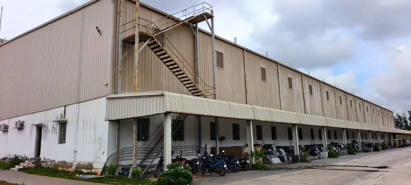

AboutGraniq
Indian granite for European stone professionals.
Granite,made unique
Graniq (gra-NEEK) joins two words: granite and unique.
At Graniq we bring together a focused range of Indian granites, gabbros and gneisses: some of the oldest, densest stone on earth. It is frost-resistant, hard-wearing and takes a deep, lasting polish.
All slabs are cut on multi-wire saws, then polished, honed, leathered or flamed to order. We supply full slabs, tiles, memorial sets and cut-to-size work, packed for export.
Most of our granite goes into kitchen countertops and vanities, then memorials, then outdoor work: paving, steps and facades. The range is India-wide and will keep growing; each stone is shown with its main use.
[Rahul: add founding year, family / company history and team, if you want them shown]

Natural stone varies in colour, pattern and veining from block to block, so we show you real slabs, not samples alone.
From Indiato Europe
We work with fabricators, memorial masons, importers and contractors.
Shade-matched kitchen slabs, memorial sets in the formats used across Poland and Central Europe, and frost-proof paving and cladding cut to size. Every order is checked, packed on fumigated timber and loaded at our own dock, with full export documents.
- Quotations with current slab and bundle photos
- Sizes to drawing or standard set lists
- Container loads and mixed loads [confirm minimum order / mixed-container policy]
- Export markets: [Rahul: list current export countries]

[Certifications: add ISO / CE marking here only if held]